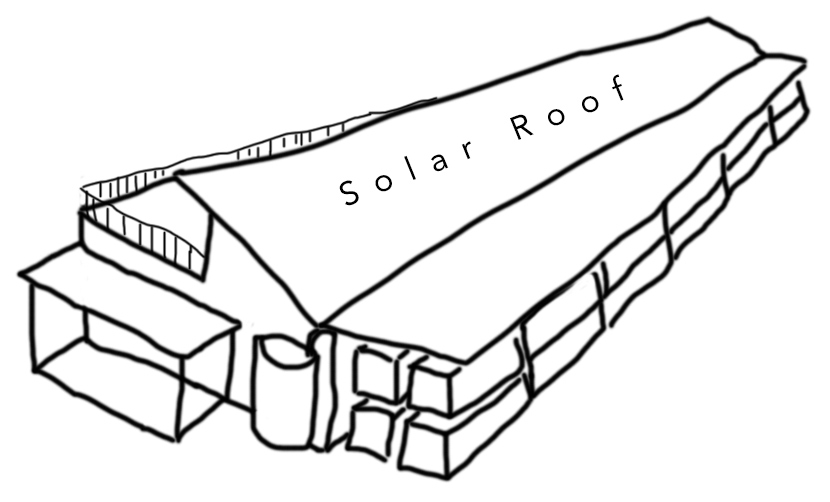
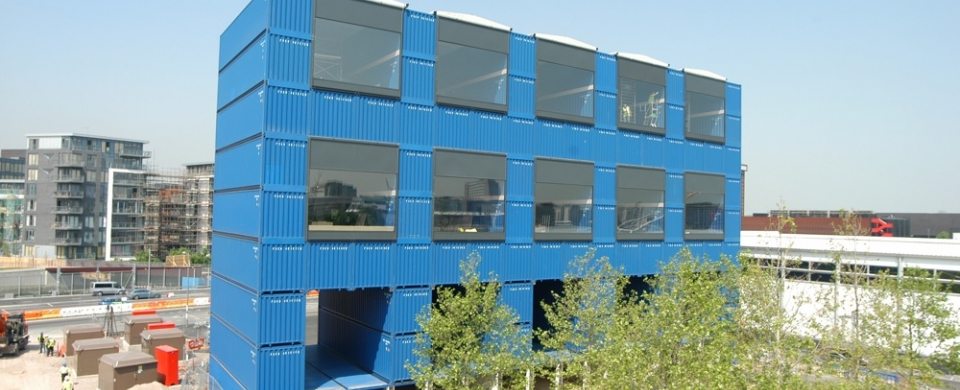
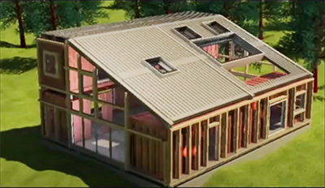
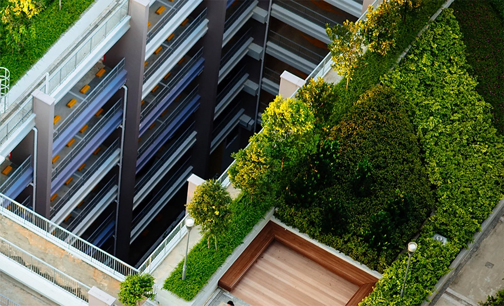
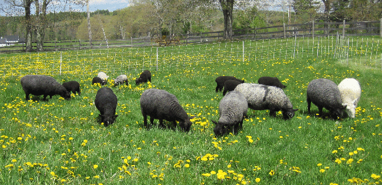
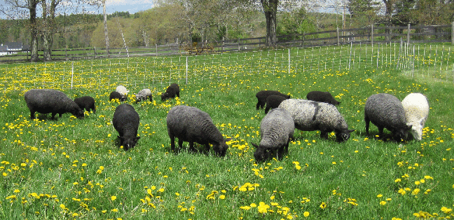
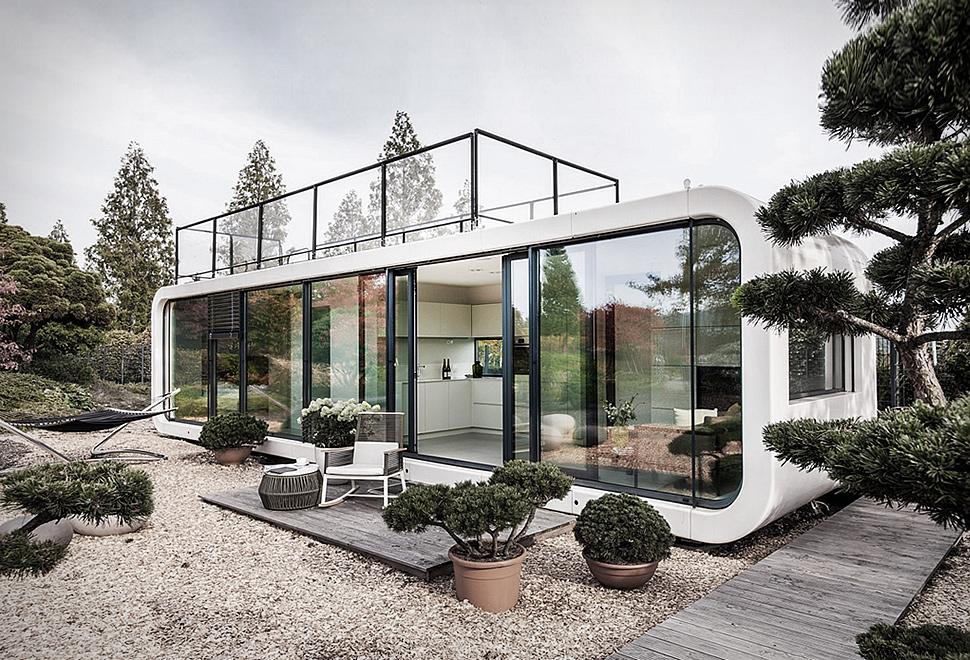
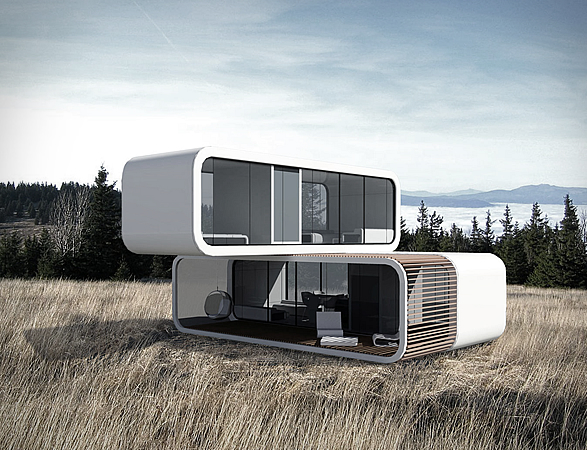

Structural Mass Timber -
Mass Timber costs are comparible to steel construction. Building with Georgia forestry products has the added advantage of easier modifications, improved performance and net positive carbon capture. Mass Timber also has a higher Flash Flame Resistance (FFR) score than steel.
Mass timber achieves its high rating by charring slightly during exposure to fire. This charring insulates the interior sections from further damage for a considerably long period of time. - JB
Solar Roof and Water Retention
The angle of the south facing roof could be 30° to optimize for solar. (Better yet, 31.1° matching the latitude.)
Can the roof's weather seal use the body of the solar panels to avoid additional weight and roofing expense?
In addtion to water collected from the roof, will surrounding surace water be retained and put to use?
Solar Roof and Water Retention
The angle of the south facing roof could be 30° to optimize for solar. (Better yet, 31.1° matching the latitude.)
Can the roof's weather seal use the body of the solar panels to avoid additional weight and roofing expense?
In addtion to water collected from the roof, will surrounding surace water be retained and put to use?

Along the exterior of the south side of the building, a row of stacked high-cube containers (each with 9.5' tall interiors) could provide portable production space and growing areas. Sets of containers could be connected to create open workareas.
A flat roof couild extend over the containers as a buttress for the angled solar roof. The area where the angled roof meets the side roof could direct rainwater to tanks at either end of the facility.
Shipping containers could be built onsite from superwood produced at the site. Production of superwood requires compression while boiling the wood in hydrogen peroxide at 100º celsius to form new hydrogen bonds. Heat could be used from the waste gasification process. About superwood
Shipping containers could be built onsite from superwood produced at the site. Production of superwood requires compression while boiling the wood in hydrogen peroxide at 100º celsius to form new hydrogen bonds. Heat could be used from the waste gasification process. About superwood
{kind=link}
Lightweight Superwood Containers and Controlled Environment Agriculture (CEA)
Someday. freight containers produced from heat-treated superwood could provide lignin as a byproduct for the production of high value Activated Carbon (AC). More high-value bioproducts from lignin.
{kind=link}
Stacked containers for residential apace amid controlled environment agriculture.
Carbon-enriched soil and nutrient fluids can be used to grow plants during shipment in superwood freight containers built onsite.
• Bullet-proof superwood is fire resistant as a result of the increased density and reduced porosity.
• Safe bio-based flame retardant additives can also be added prior to the compression of superwood and transparent wood.

Angled roof for solar. Exterior framework could be avoided
by using nanowood as insulator for shipping containers.

Lightweight materials from superwood, transparent wood for windows, nanowood for insulation and water purification. Image source: Invent Wood
An Activated Carbon Study in 2016 found lignin provides a coconut-like activated carbon structure that is two to three times more valuable than activated carbon from wood.
{kind=link}
Lightweight materials from superwood, transparent wood for windows, nanowood for insulation and water purification. Image source: Invent Wood
An Activated Carbon Study in 2016 found lignin provides a coconut-like activated carbon structure that is two to three times more valuable than activated carbon from wood.
more
Like coconut, lignin has tighter graphitic platelet spacings to remove more small molecules from drinking water. Activated carbon made from lignin is softer than from coconut shells, which allows it to be used as a powder for faster absorption of contaminants, with less water-leaching ash than present powdered activated carbons.Stacked Container Dwellings
 

Bioeconomies for Carbon Capture and Hydrogen Production

Hypothetical Superwood Container Dwellings
Lightweight, durable containers made of superwood and carbon fiber.

